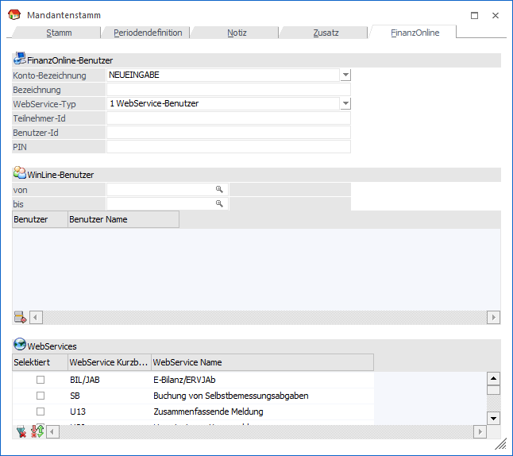
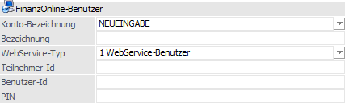
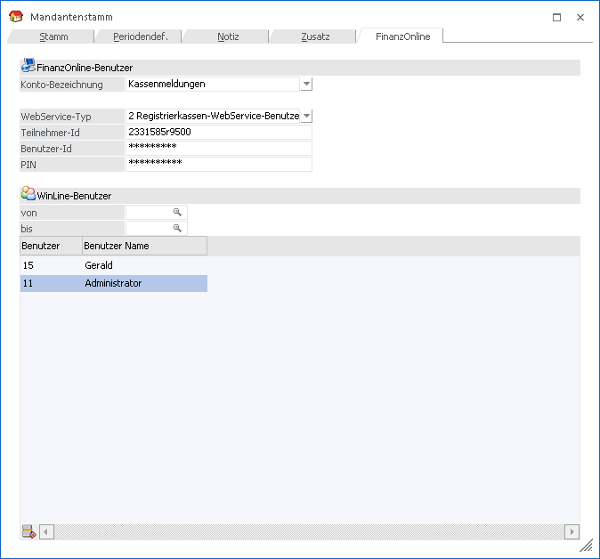
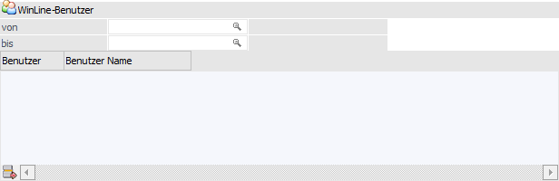
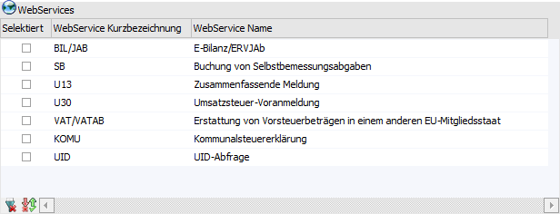

In diesem Register können die Zugangsdaten der FinanzOnline-Benutzer hinterlegt werden.

FinanzOnline-Benutzer

Ø Konto-Bezeichnung
Aus der Auswahlliste kann entweder ein bestehendes Konto ausgewählt und bearbeitet oder durch Anwahl des Eintrages NEUEINGABE ein neues Konto angelegt werden.
Ø Bezeichnung
Eingabe der Bezeichnung des Kontos max. 30 Zeichen lang.
Ø WebService-Typ
Auswahl des Benutzertyps, der analog zur Auswahl im FinanzOnline ist, auswählen. In der Auswahlliste stehen folgende Benutzertypen zur Verfügung:
ü 1 - WebService-Benutzer
Mit dem
Benutzertyp 1 WebService-Benutzer ist das Übermitteln von Finanzamt-Meldungen,
wie z.B.: UVA, als XML-Datei direkt an das FinanzOnline-Portal möglich. Welche
Finanzamt-Meldungen mit dem Web-Service-Benutzer erlaubt sind, kann in der unter
Tabelle "WebServices" ausgewählt werden.
ü 2 -
Registrierkassen-WebService-Benutzer
Mit dem Benutzertyp 2
Registrierkassen-WebService-Benutzer können die Meldungen für die
Registrierkassa direkt an das FinanzOnline-Portal übermittelt werden. Bei
Registrierkassen-WebService-Benutzer stehen keine Finanzamt-Meldungen zur
Verfügung.
Bespiel

Ø Teilnehmer-Id
Eingabe der FinanzOnline-Teilnehmer-ID. Die Teilnehmer-ID kann 8 bis 12 Zeichen lang sein und darf keine Sonderzeichen enthalten. Beim Speichern wird die Teilnehmer-ID überprüft und bei nicht entsprechen der Vorgaben wird eine Meldung ausgegeben.
Ø Benutzer-Id
Eingabe der FinanzOnline-Benutzer-ID. Die Benutzer-ID kann 5 bis 12 Zeichen lang sein und wird als Passwort dargestellt. Beim Speichern wird die Teilnehmer-ID überprüft und bei nicht entsprechen der Vorgaben wird eine Meldung ausgegeben.
Ø PIN
Eingabe der FinanzOnline-PIN. Der PIN kann 5 bis 12 Zeichen lang sein und wird als Passwort dargestellt. Beim Speichern wird der PIN überprüft und bei nicht entsprechen der Vorgaben wird eine Meldung ausgegeben.
WinLine Benutzer

In der WinLine-Benutzer-Tabelle sind jene WinLine Benutzer zu hinterlegen, welche dem oben angegebenen FinanzOnline-Benutzer zugeordnet sind bzw. entsprechen. Bei der Übermittlung von Finanzamt-Meldungen über WebService werden die Zugangsdaten des oben angegebenen FinanzOnline-Benutzer für den angemeldeten WinLine-Benutzer herangezogen.
Ø Benutzer von / bis
Auswahl des WinLine-Benutzers der mit der oben eingetragenen FinanzOnline-Anmeldung die Meldungen aus der WinLine direkt an das FinanzOnline-Portal übermitteln kann.
Die Auswahl kann über die Autovervollständigung oder über den Matchcode erfolgen.
WebServices

In der WebServices-Tabelle ist es möglich für jene oben angeführten WinLine Benutzern, die Finanzamt-Meldungsarten auszuwählen, welche direkt über WebService an das FinanzOnline Portal übermittelt werden sollen. Die Auswahl steht dementsprechend nur für Benutzern des Typs "1 - WebService-Benutzer" zur Verfügung.
Hinweis
Der WebService für die Vorsteuererstattung steht derzeit noch nicht zur Verfügung.
Achtung
Jeder WinLine-Benutzer ist für jede Finanzamt-Meldung über WebService nur einem FinanzOnline-Benutzer zugeordnet.
Beispiel
Es wurde ein FinanzOnline-Benutzer "FIBU" angelegt als WebService-Typ "1 WebService-Benutzer". Der WinLine-Benutzer "a" wurde dem FinanzOnline-Benutzer zugeordnet und hat für die UVA und ZM die Berechtigung über WebService die XML-Dateien an das FinanzOnline-Portal zu übermitteln.
Es wurde ein weiterer FinanzOnline-Benutzer "LOHN" angelegt als WebService-Typ "1 WebService-Benutzer". Die WinLine-Benutzer "a" und "z" wurden dem FinanzOnline-Benutzer zugeordnet und haben die Berechtigung für die Kommunalsteuererklärung.
Diese Konstellation ist möglich.
Wenn jedoch beim FinanzOnline-Benutzer "LOHN" für die WinLine-Benutzern "a" und "z" die Berechtigung um die UVA erweitert wird, ist dies nicht möglich, da der WinLine-Benutzer "a" bereits beim FinanzOnline-Benutzer "FIBU" die Berechtigung für die UVA hinterlegt hat.
Buttons
Ø Ok
Durch Anwahl des Buttons "Ok" bzw. der Taste F5 werden die FinanzOnline-Zugangsdaten gespeichert.
Ø Ende
Mit dem Ende-Button wird das Fenster ohne Änderungen verlassen.
Ø Bezeichnung editieren
Nach dem Abspeichern der Bezeichnung für den FinanzOnline-Zugang kann diese noch editiert werden.
Ø Löschen
Mit dem Button "Löschen" wird der FinanzOnline-Zugang gelöscht.
Ø Verbindungscheck
Mit dem Verbindungscheck-Button werden die Verbindungsdaten für den FinanzOnline-Zugang geprüft und es wird eine entsprechende Meldung ausgegeben.